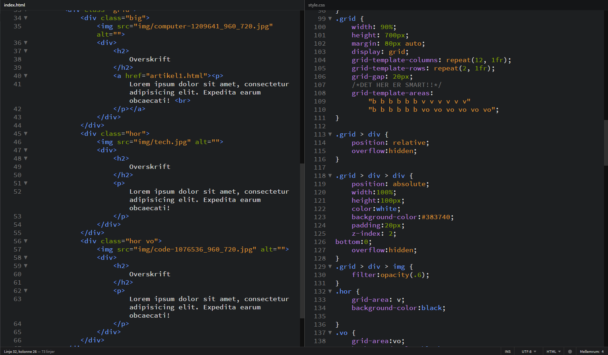

Class/ID-Tutorial
Hvorfor skal du ikke bruge classes? Og hvad kan du gøre for at få samme resultat uden? Svaret kan du få her i artiklen. Hvornår skal du egentlig bruge classes og ID? Hvorfor skal du ikke altid bare style med class?
Selvfølgelig skal du bruge classes og ID, men det handler om hvornår man skal bruge dem og hvorfor. Normalt er der ikke nødvendighed for at have classes til ting som ikke giver mening alligevel.
Man kan sagtens have en class på et "wrapper" element og så kalde elementet via. dine selectors i CSS

Grunden til jeg har benyttet mig af krokodillenæb frem for bare at skrive min selector således: ".grid div"
Er pga når man ikke skriver sine krokodillenæb tager du også fat i divs som er længere nede i "hierarkiet" og derfor kan det være problematisk at style i den længere bane.
HOWEVER!
Når man skal have en gennemgående styling så giver det bedre mening at lade være med at bruge krokodillenæbene.
dette kunne f.eks. være hvis du skal have samme styling på ALLE dine paragraphs.
Jeg ejer ikke videoen herunder - den er ikke lavet af mig eller har noget at gøre med mig. Den tilhører DevHQLessons og den er kun benyttet for at vise potentiale til at putte video ind i en artikel.